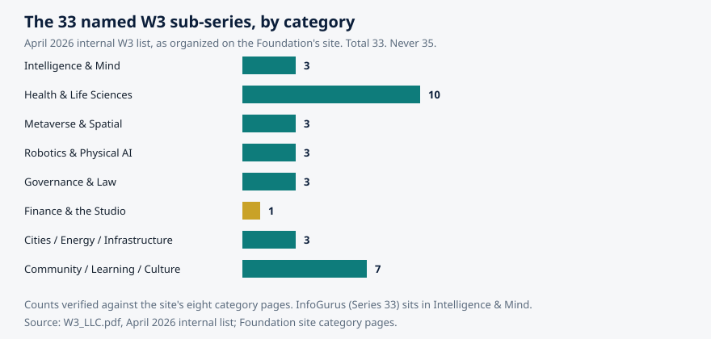

Article 65 · Intelligence & Mind · AGI Future Foundation
The Knowledge Graph as a Public Good
In 2012, Google announced a change to search that sounded, at the time, like marketing copy. The company said it was moving from matching strings of characters to understanding things: people, places, concepts, and the relationships between them. A search for a person would return not just pages containing their name, but a panel of facts about them, their birth date, their works, their relationships, assembled from a structured database behind the search box. The idea was called the Knowledge Graph, and the slogan was "things, not strings."
InfoGurus (W3 Series 33) — Article 3 of 3 — Long-form, staged locally for the AGI Future Foundation article program. November 2026.
Illustration: knowledge as a web of connected things, not a pile of pages. Generated illustration, not a photograph.
From strings to things
In 2012, Google announced a change to search that sounded, at the time, like marketing copy. The company said it was moving from matching strings of characters to understanding things: people, places, concepts, and the relationships between them. A search for a person would return not just pages containing their name, but a panel of facts about them, their birth date, their works, their relationships, assembled from a structured database behind the search box. The idea was called the Knowledge Graph, and the slogan was "things, not strings."
The slogan stuck because the idea was real, and because it named a shift that had been building for more than a decade. The web, as originally built, is a web of documents. A page links to another page, and a reader follows the link. A machine reading the web sees text, and can count words, but cannot tell whether two pages that mention "Paris" mean the city in France, the city in Texas, or a person named Paris. Structured knowledge solves that problem by giving every thing an identifier, and by recording facts as connections between identifiers: Paris, capital of, France. Berlin, capital city, Germany. That triple, subject, predicate, object, is the atom of a knowledge graph, and a graph of billions of such triples is a machine-readable map of what the world knows.
This article is about who builds that map, who owns it, and why it matters that at least one version of it belongs to the public. The answer turns out to be a story about a company that bought a database and then gave it away, a community that built the world's largest open knowledge graph one edit at a time, and a shared vocabulary that lets any website describe itself in terms a machine can understand. It is also a story about what a proposed information series would have to learn from all three, if it ever decided that its job was to organize knowledge rather than merely to answer questions.
Freebase: the database Google bought, then gave away
The Knowledge Graph did not begin at Google. It began with Freebase, a project started by Metaweb in 2007, described by its creators as a huge collection of structured data, "synapses for the global brain." Freebase became a significant linked open data project in 2008, and Google acquired it in 2010, incorporating its contents into the proprietary Knowledge Graph that launched in 2012. That history is set out in the Schema App guide to knowledge graphs, which traces the line from Freebase through acquisition to the familiar knowledge panel in search results.
What happened next is less well known, and more important for this article. Google continued to maintain Freebase for several years, and then, in 2014, gave its content to the Wikidata community. When Freebase became read-only in 2015, it held over 3 billion facts about nearly 50 million entities. The transfer was a recognition, in practice, that a structured map of general knowledge is a commons, and that a commons is better maintained by a community than by a single company, even a company as large as Google. The proprietary Knowledge Graph continued, powered by its own data. But the public record of what Freebase had collected went to the public graph, where anyone could use it, correct it, and build on it.
That decision frames the central question of this article. A knowledge graph is infrastructure, like a road or a library. It can be owned privately and rented out, or it can be held in common and maintained by its users. Both models exist, and both have virtues. A private graph can be curated to a single company's standard, updated on its schedule, and integrated with its products. A public graph can be inspected, corrected, and reused by anyone, for any purpose, without permission. The argument of this article is that the public model is the one a mission-driven information service should study, because the public model is the one that can be checked, and checkability is the standard this whole article program is built on.
Wikidata: the public graph, by the numbers
Wikidata is the public graph that inherited Freebase's mantle, and it is the largest openly licensed structured dataset on the web. It is a collaboratively edited multilingual knowledge graph hosted by the Wikimedia Foundation, released under the Creative Commons CC0 public domain dedication, launched on 29 October 2012, and developed mainly by Wikimedia Deutschland. It supplies the interlanguage links and some of the infobox data used by Wikipedia and other Wikimedia projects. That description comes from the Wikipedia article on Wikidata, and the numbers behind it are worth stating carefully, because they are the kind of numbers that change quickly and should always be dated.
As of early 2025, Wikidata had 1.65 billion item statements, the individual triples that make up the graph. As of October 2026, it held more than 123 million data entities, including items, properties, and lexemes, with more than 1.7 million lexemes in 1,568 languages. The Wikimedia Diff announcement of Wikidata's recognition as a digital public good gives a slightly earlier count, over 119 million entries maintained by around 24,000 volunteers worldwide, and notes that Wikidata contributes to six of the United Nations' 17 Sustainable Development Goals. The counts differ because they were taken at different dates; the direction does not. The graph grows by hundreds of thousands of edits a day, made by a community of tens of thousands of active contributors.
The structure is simple enough to explain in a paragraph, and that simplicity is the design. Every thing in Wikidata is an item, and every item has a unique persistent identifier beginning with Q. Douglas Adams is Q42. Every property is an identifier beginning with P: P31 means "instance of," so the triple Q42, P31, Q5 says Douglas Adams is an instance of a human. Statements can carry qualifiers, which say when a fact was true, or in what context, and references, which say where the fact came from. Every statement can be backed by reliable sources: scientific literature, official data, or trusted media. All content is released under CC0, free of copyright restrictions, so anyone can use, share, and build upon it. The Wikidata introduction page, fetched for this article, sets out the model in the project's own words, and the Wikimedia Enterprise Wikidata API page describes the same structure from the point of view of a developer: items, properties, and values, stored as triples, machine-readable, highly interoperable, and language-agnostic by default.
Three properties of that design deserve attention, because each one solves a problem that breaks lesser databases. First, identifiers are opaque. Q42 means nothing in English, French, or any other language, and that is the point: the identifier does not change when the label changes, when a person marries, when a city is renamed, or when a term is translated. The label is data attached to the identifier, not the identifier itself. Second, statements are qualified by time. A person can be the chief executive of a company from one date to another, and the graph can record both the fact and its dates, so a query for "who is the chief executive now" and a query for "who was the chief executive in 2019" return different, correct answers. Third, every statement can carry its source. That is the difference between a database and a rumor: the graph does not merely assert. It points at the place the assertion came from, so a reader can check it.
The practical consequence is that Wikidata sits behind answers people have almost certainly seen without knowing it. Its structured dataset has been used by virtual assistants such as Apple's Siri and Amazon Alexa, and its facts feed the infoboxes and interlanguage links of Wikipedia itself. A single edit, like the name of a firm's chief executive, propagates to all linking pages, ensuring consistency. That propagation is also the risk: a wrong edit propagates too, which is why the graph's edit history is public, why vandalism is reverted by volunteers and bots, and why references matter. A public graph is not a graph without errors. It is a graph whose errors are visible and correctable by anyone.
A digital public good, officially
In 2025, Wikidata was recognized as a digital public good by the Digital Public Goods Alliance, and added to the DPG Registry maintained by the Alliance's Secretariat. Wikipedia had received the same recognition in February 2025. The Wikimedia Diff announcement describes Wikidata as the world's largest open knowledge graph, used globally to build transparency, trust, and digital equity, and notes that its data is open, freely accessible, reusable, and machine-readable, understandable to humans and processable by computers. The Wikipedia article on Wikidata records the same recognition, and the technology press described it at the time as the world's largest free knowledge graph.
The recognition matters beyond prestige, because it names the standard a public knowledge resource should be judged by. A digital public good, in the Alliance's sense, is open source, openly licensed, and built to advance the Sustainable Development Goals. Wikidata qualifies on all three counts: its software, Wikibase, is open source; its data is CC0; and its applications include civic transparency, healthcare access mapping, and opening access to texts in under-resourced languages. The Diff announcement gives concrete examples: GovDirectory, a crowdsourced and fact-checked directory of official governmental online accounts and services around the globe; AletheiaFact, a platform for verifying political claims based in São Paulo that uses Wikidata's records to drive civic transparency; a map of medical facilities in Murshidabad district in India, color-coded by type, making healthcare access easier; and Sangkalak, which opens up access to Bengali Wikisource texts. These are not hypothetical uses. They are projects built on the graph by people who did not need to ask permission, pay a license fee, or negotiate access.
The point for a proposed information series is that a public good is not merely a nice label. It is a governance choice with consequences. A graph that anyone can edit must have rules for what counts as a fact, who can change it, and how disputes are resolved. Wikidata's rules are public: notability criteria for what gets an item, sourcing requirements for statements, and a community process for contested edits. A graph that anyone can reuse must have a license that permits reuse, and CC0 is the most permissive license available, a waiver of copyright rather than a conditional permission. And a graph that claims to serve the public must be measurable against public goals, which is why the Sustainable Development Goals framing is useful: it asks not whether the graph is large, but whether it is used for things the public needs.
It is worth pausing on the scale of the volunteer effort, because it is easy to understate. Around 24,000 volunteers maintain the graph, and the community handles hundreds of thousands of edits a day. No company employs that many curators for a general knowledge base, and no company could, at a price any public institution could pay. The volunteer model works because the work is divided into small, checkable pieces: one statement, one reference, one correction. That is the same division of labour that makes Wikipedia work, and the same division that makes peer review work. The lesson generalizes: verification at scale is not achieved by hiring more experts. It is achieved by making each claim small enough, and checkable enough, that many people can verify a piece of it.
Schema.org: the vocabulary the whole web shares
Wikidata is a single graph, maintained in one place. Schema.org is something different and complementary: a shared vocabulary that lets any website describe its own content in structured terms, so that search engines and other machines can understand it. In 2011, the major search engines Bing, Google, and Yahoo, later joined by Yandex, created Schema.org to provide a single schema across a wide range of topics, including people, places, events, products, and offers. That history is set out in the Communications of the ACM article on Schema.org, which traces the longer history of efforts to enable web-scale exchange of structured data, from the Meta Content Framework through RDF, RDFS, and OWL, standardized between 1997 and 2004, to Tim Berners-Lee's 2001 Scientific American article on the Semantic Web.
Schema.org launched with 297 classes and 187 relations, which over five years grew to 638 classes and 965 relations, according to the same ACM article, and the vocabulary has continued to grow since. The first application to use the markup was Google's Rich Snippets, which switched to the Schema.org vocabulary in 2011, and annotations in Schema.org are used as a data source for the Knowledge Graph, providing background information about well-known entities such as logo, contact, and social information. A guide to content knowledge graphs puts the adoption in perspective: Schema.org's vocabulary of over 840 types can be applied to web content as Microdata, RDFa, or JSON-LD, turning unstructured content into distinct entities a machine can reason about.
The design choice that made Schema.org succeed where earlier vocabularies stalled was restraint. Earlier efforts offered either unconstrained combinations of identifiers and schemas, which produced linked data that no two publishers described the same way, or tightly curated ontologies that no publisher could extend. Schema.org sits between those extremes: a single shared vocabulary, maintained in the open, that publishers can apply without asking permission and extend when they need to. The ACM article describes the Knowledge Graph approach as distinguished by a strong emphasis on up-front entity reconciliation, requiring curation discipline to ensure new data is carefully integrated and linked to existing entities. Schema.org provides the vocabulary for that integration. The graph provides the discipline.
For a proposed information series, Schema.org is the most immediately practical of the three models in this article, because it does not require building a graph at all. It requires describing what you already publish in terms a machine can understand: this page is about an organization, founded on this date, located at this address, with this contact. The Foundation's own site already uses JSON-LD structured data on its article pages, which is Schema.org in practice. The step from there to a knowledge graph is not a new system. It is the discipline of describing every entity the same way, every time, and linking it to the same identifier, so that a machine can follow the links without guessing.
Querying the graph: SPARQL and the question nobody has asked
A knowledge graph is only as useful as the questions it can answer, and the standard language for asking those questions is SPARQL, a query language for linked data. Wikidata exposes a public SPARQL endpoint, and the QAnswer guide to the Wikidata knowledge graph explains why that matters: the endpoint lets anyone ask questions no one has asked before, by traversing the graph rather than searching for a pre-written page. Which chemists born in a given city won a Nobel Prize? Which rivers flow through more than three countries? Which films were directed by a person who also wrote the novel they adapt? A search engine can find a page that answers a popular question. A graph can answer a question nobody has thought to write a page about, because the answer is assembled from the connections, not retrieved from a document.
That capability is also the capability that makes knowledge graphs valuable to AI systems, and the reason the graph's provenance rules matter more now than they did five years ago. An AI assistant that answers from a graph can show its sources: the statements it used, the references behind them, and the query that assembled them. An AI assistant that answers from a language model's weights cannot show any of those things, because the weights do not record where the information came from. The Wikimedia Enterprise page makes the pitch explicitly: traverse the graph to ground AI agents and applications in provable facts. Grounding is the right word. A graph does not make an AI truthful. It gives the AI something to stand on that a reader can inspect.
There is a caution here, and it should be stated as plainly as the promise. A query is only as good as the data it traverses, and a graph that contains errors will return wrong answers with the confidence of a machine. The May 2025 split of the Wikidata Query Service into two graphs, because scholarly-article data had grown so large it needed its own service, is a reminder that the infrastructure itself is a living system with breaking changes: queries written for the old endpoint needed updating, and anyone who built on the graph had to keep up. The QAnswer guide documents that split, and it is worth reading as a case study in what maintaining a public graph actually costs. A public good is not free to run. It is free to use, and the difference is paid for by the community that maintains it.
Private graphs, public graphs, and the choice between them
Not every knowledge graph should be public, and this article does not argue that it should. A company that builds a graph of its own products, customers, and suppliers has good reasons to keep it private: competitive information, personal data, and trade secrets do not belong in a public commons. A hospital that builds a graph of its patients' care pathways must keep it private as a matter of law and ethics. The private graph is a legitimate and valuable model, and the techniques are the same: identifiers, triples, qualifiers, references, and queries.
The choice that matters is not private versus public in general. It is which facts belong in the commons, and who decides. The facts that belong in the commons are the ones that everyone needs and no one should have to pay twice for: the names and dates of public figures, the locations of public facilities, the relationships between public institutions, the structure of public knowledge itself. Wikidata's contribution to the Sustainable Development Goals is a way of naming that category: facts that help people find a hospital, check a politician's claim, or read a text in their own language are facts that should be free, because the cost of keeping them private is paid by the people who can least afford it.
A proposed information series would face that choice in miniature, the first time it wrote down a fact. Would the facts it collects be published under an open license, with their sources attached, so that anyone can reuse and check them? Or would they be held as a private asset, available only to the series' own users? The Foundation's mission, safe, equitable, and socially beneficial AI, points toward the open answer, but the mission does not decide the question by itself. The decision would need to be made in writing, by a human Steward Council, with counsel's advice on licensing and privacy, before any graph was built. Until that decision exists, there is no graph to describe, and this article describes none.
What can be said now is what the standard would be. A public knowledge graph built by a mission-driven series would need identifiers that do not change when labels change, statements qualified by time, references on every substantive claim, a public edit history, and a license that permits reuse. Those are Wikidata's rules, and they are public, documented, and argued about in the open. They are also the rules that make a graph checkable, and checkability is the standard that runs through all three articles in this set: a source you can trace, an expert you can vet, and a graph you can query. The three are one discipline, applied to three different kinds of knowledge.
The 33 series, by category: what a graph of the network would show
The Foundation's own network is small enough to map, and the map is instructive. The April 2026 internal W3 list names 33 sub-series, and the Foundation's site organizes them into eight categories. The counts are exact, verified against the site's eight category pages: Intelligence and Mind 3, Health and Life Sciences 10, Metaverse and Spatial 3, Robotics and Physical AI 3, Governance and Law 3, Finance and the Studio 1, Cities, Energy, and Infrastructure 3, and Community, Learning, and Culture 7. That is 33 in total, and it is the only count this program uses: never 35, never 34, always the 33 named sub-series in the April 2026 internal list.

Chart: the 33 named W3 sub-series by category, from the April 2026 internal list as organized on the Foundation's site. Counts verified against the eight category pages. InfoGurus (Series 33) sits in Intelligence and Mind, the smallest category alongside Metaverse and Spatial, Robotics and Physical AI, Governance and Law, and Cities, Energy, and Infrastructure.
A knowledge graph of that network, if one were ever built, would start with exactly this kind of table, and then add the relationships: which series shares a steward with which, which series depends on which, which series has a filing and which has only a name. The table above is the seed of such a graph, and it is worth noting what it does not contain: no valuations, no funding, no timelines, no partners. Those are not facts on record, and a graph that recorded them as facts would be a fiction with identifiers attached. The discipline of a graph is that every statement needs a source, and a statement without a source does not go in. That discipline is what separates a knowledge graph from a pitch deck.
InfoGurus itself sits in Intelligence and Mind, alongside Cognition.X (Series 1) and Empathic.X (Series 2): the first, the second, and the last names on the W3 list. The category page says the three together cover the inward arc of intelligence, learn, understand, know. A graph would record that relationship as a triple, and a reader could query it. A paragraph can only assert it. The difference is the difference between a claim and a checkable claim, and it is the difference this article has been arguing for throughout.
Glossary
- Knowledge graph: A structured, reusable data layer that represents knowledge as interconnected entities with specific attributes, expressed as triples and queried as a network rather than searched as text.
- Triple: The atom of a knowledge graph: a subject, a predicate, and an object, such as Berlin, capital city, Germany.
- Item (QID): A thing in Wikidata, identified by a persistent identifier beginning with Q, such as Q42 for Douglas Adams. Labels in any language attach to the item; the identifier does not change.
- Property (PID): A type of relationship in Wikidata, identified by a number beginning with P, such as P31 for "instance of."
- Statement: A claim in Wikidata made of an item, a property, and a value, optionally carrying qualifiers (such as dates) and references (sources).
- Qualifier: Additional information on a statement, such as the dates during which a fact was true.
- SPARQL: A query language for linked data, used to ask Wikidata questions by traversing the graph rather than searching for a pre-written page.
- Schema.org: A shared vocabulary, created in 2011 by Bing, Google, Yahoo, and later Yandex, that lets websites describe their content in structured terms using Microdata, RDFa, or JSON-LD.
- JSON-LD: A format for embedding structured data in web pages, used to apply Schema.org vocabulary. The Foundation's site uses it on its article pages.
- CC0: The Creative Commons public domain dedication under which all Wikidata content is released, free of copyright restrictions.
- Digital public good: In the Digital Public Goods Alliance's sense, an open-source, openly licensed resource built to advance the Sustainable Development Goals. Wikidata was recognized as one in 2025; Wikipedia in February 2025.
- Freebase: A structured-data project started by Metaweb in 2007, acquired by Google in 2010, incorporated into the Google Knowledge Graph, and transferred to the Wikidata community in 2014; read-only from 2015.
- Grounding: Using a knowledge graph to give an AI system's answers a checkable source, by showing the statements, references, and query behind the answer.
Frequently asked questions
What is a knowledge graph, in one sentence?
A network of things and the relationships between them, stored as triples a machine can query, rather than as documents a human must read.
Is Wikidata the same as Wikipedia?
No. Wikipedia holds prose written for humans. Wikidata holds structured facts written for machines, once, centrally, in a language-independent way, and supplies infobox data and interlanguage links to Wikipedia. Both are hosted by the Wikimedia Foundation, and both were recognized as digital public goods in 2025.
How big is Wikidata?
As of October 2026, it held more than 123 million data entities, with 1.65 billion item statements as of early 2025. Counts change daily; always check the date on a number before repeating it.
Does the Foundation have a knowledge graph?
No. InfoGurus (W3 Series 33) is proposed and planned, not formed, funded, or offered, and it has no knowledge graph, no database, and no users. This article describes the public graphs that a future definition of the series could learn from.
Why does the license matter?
Because a graph anyone can reuse needs a license that permits reuse. Wikidata's CC0 dedication is the most permissive available: a waiver of copyright, not a conditional permission. A graph under a restrictive license is a private asset, not a public good.
Can a knowledge graph be wrong?
Yes. A wrong edit propagates to every page that uses the fact, which is why Wikidata's edit history is public, why references are required on statements, and why vandalism is reverted by volunteers and bots. A public graph is not error-free; it is visibly correctable.
How does this article support the Foundation?
It supports Foundation donations and funding by setting out, in public, the standard a future knowledge-organizing series would be held to: open licensing, sourced statements, and a public edit history. It does not solicit donations, and no donation is described as tax-deductible.
Sources
- "Wikidata" (Wikipedia) — https://en.wikipedia.org/wiki/Wikidata
- Wikimedia Diff, "Building an Internet for Everyone: Wikidata Recognized as a Digital Public Good" — https://diff.wikimedia.org/2025/10/29/building-an-internet-for-everyone-wikidata-recognized-as-a-digital-public-good/
- Wikidata, "Introduction" — https://www.wikidata.org/wiki/Wikidata:Introduction (fetched via Firecrawl, 2026-11-07)
- Wikimedia Enterprise, "Wikidata API — Structured Data via Wikimedia Enterprise" — https://enterprise.wikimedia.com/project-data/wikidata-api/
- Schema App, "What is a Knowledge Graph in SEO?" — https://www.schemaapp.com/schema-markup/what-is-a-content-knowledge-graph/
- Communications of the ACM, "Schema.org" — https://cacm.acm.org/practice/schema-org/
- QAnswer, "The Wikidata Knowledge Graph Explained: Items, SPARQL and Enterprise Use" — https://www.qanswer.ai/blog/wikidata-knowledge-graph-explained
- TechRadar, "Wikidata's next leap: the open database powering tomorrow's AI and Wikipedia" — https://www.techradar.com/pro/wikidatas-next-leap-the-open-database-powering-tomorrows-ai-and-wikipedia
- AGI Future Foundation, Article 03, "InfoGurus: Knowledge Organisation, Expertise, and Answers You Can Check" (local site file,
articles/article-03-infogurus.html); Category 1, "Intelligence & Mind" (local site file,articles/category-1-intelligence-mind.html). - Foundation and Fellowship filing records, reviewed 2026-11-03 (Foundation Entity No. B20260196664; Fellowship Entity No. B20260229217). W3 series counts verified against the site's eight category pages (3 / 10 / 3 / 3 / 3 / 1 / 3 / 7 = 33).
Goals served: foundation-funding (a public, checkable knowledge standard is what a future donor would ask for first), foundation-governance (open licensing and public edit history as governance commitments in writing). Not a solicitation; nothing here offers securities or describes a donation as tax-deductible.
Series page: InfoGurus (S33). Related articles: How to Judge a Source (Article 63) · Who Gets to Be an Expert? (Article 64)
Contact
Questions about InfoGurus, or about the Foundation's work in this category, go to x@agifuturefoundation.org. Say who you are, what your interest is, and what you could contribute. A reply, if one comes, will come from a human. This page is not an offer of securities and not a solicitation of funds: no price, terms, or return is promised, and no funding is being sought for this series. Nothing on this page is legal, tax, or financial advice.